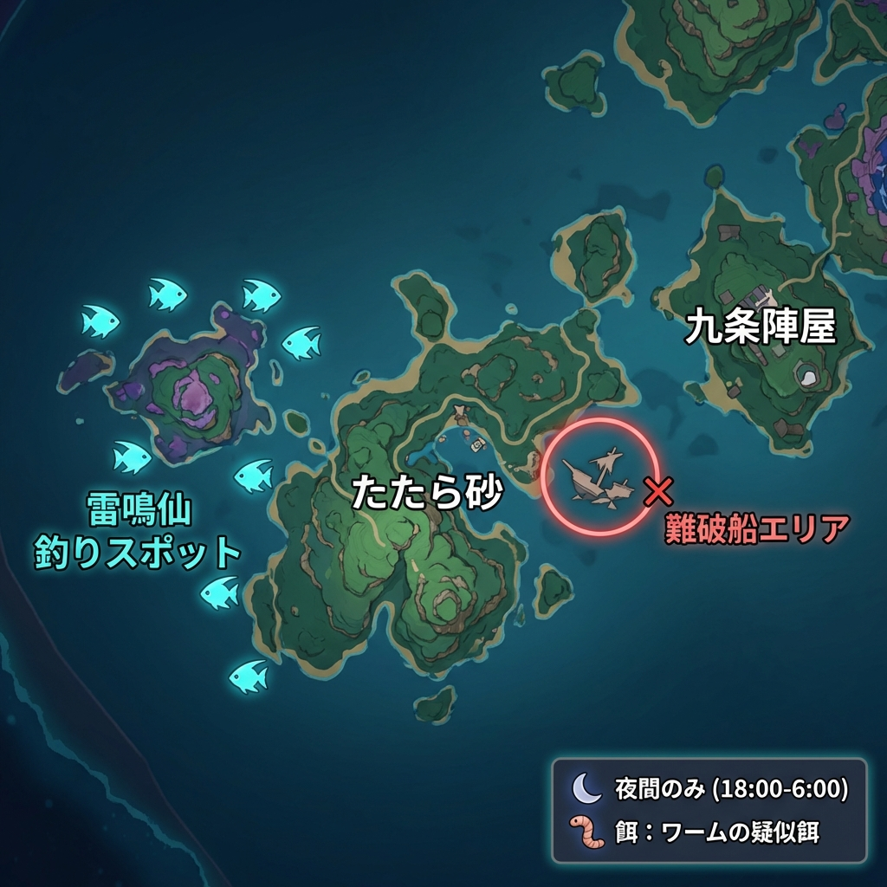
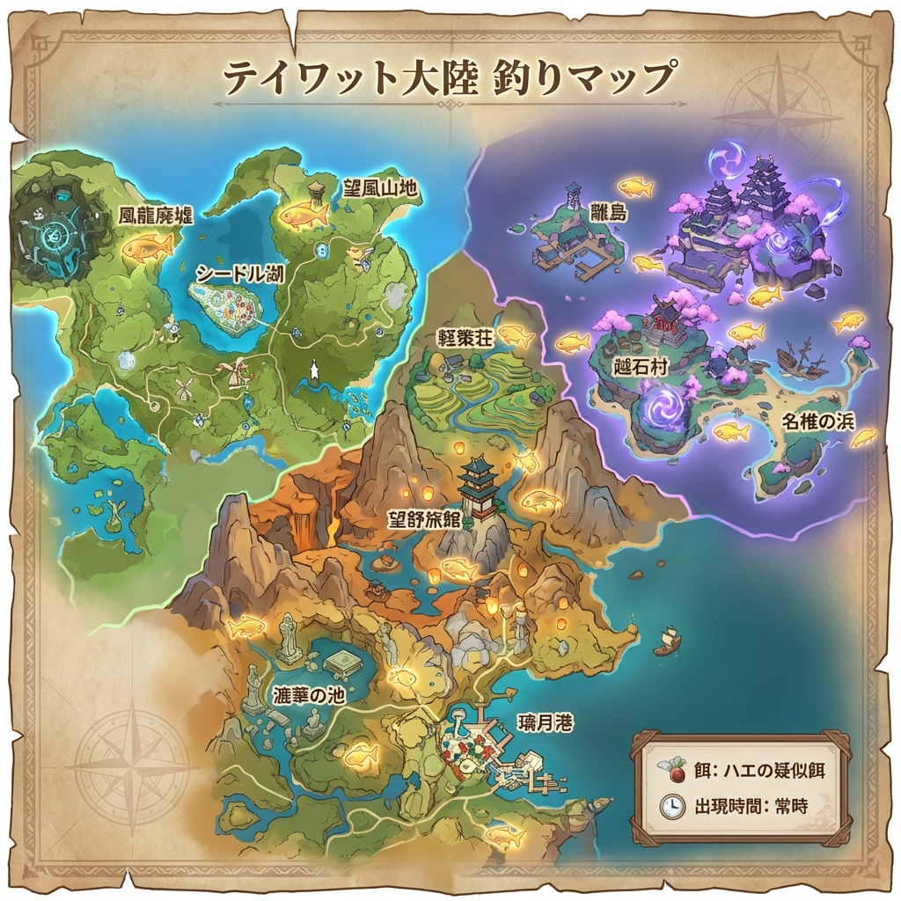
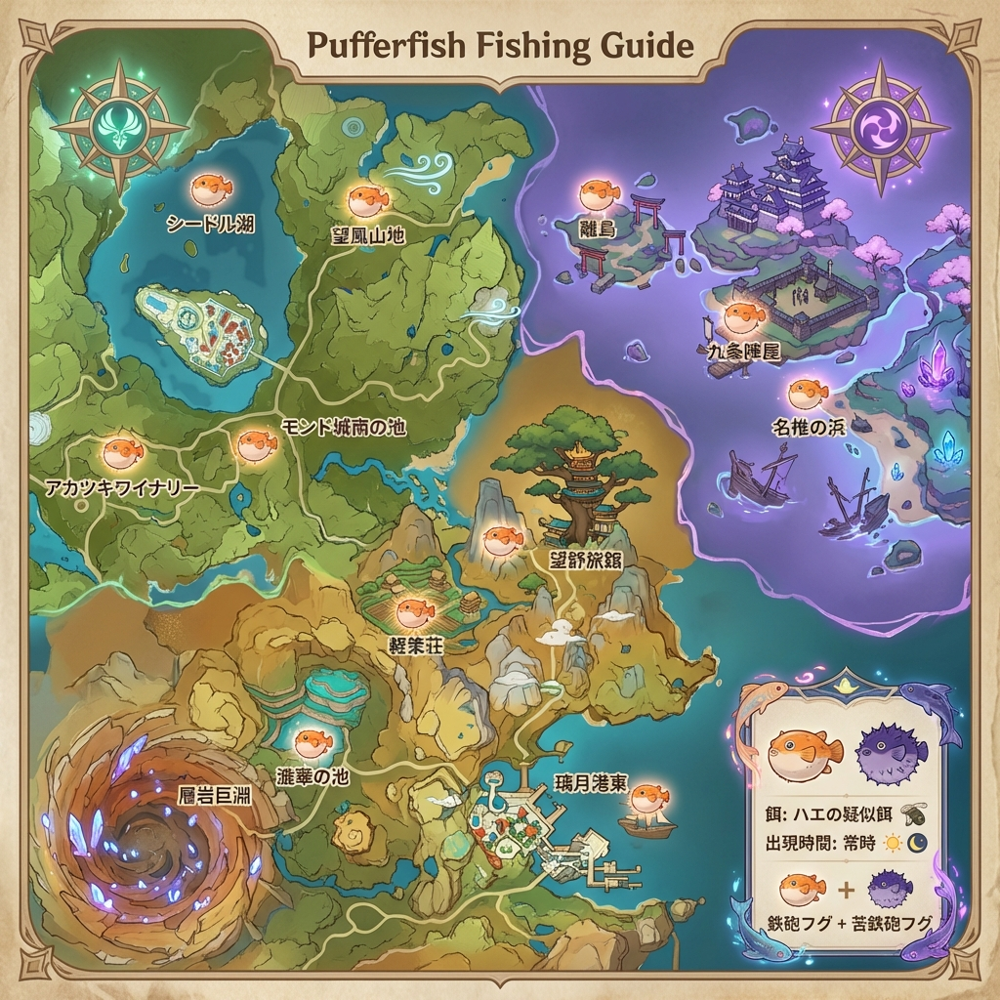

🎣 漁獲 完凸チャート
精錬ランク5を目指すための完全釣りガイド ～ マップ付き ～
漁獲
★★★★
【精錬5】
長柄武器（槍） - 釣り報酬
基礎攻撃力（Lv.90）:
510
サブステータス:
元素チャージ効率+45.9%
武器効果（精錬5）:
元素爆発ダメージ+32% / 会心率+12%
📊 完凸までに必要な魚の総数
⚡ 雷鳴仙
× 18
🐟 金赤リュウノコ
× 20
🐟 錆色リュウノコ
× 20
🐡 鉄砲フグ
× 40
🐡 苦鉄砲フグ
× 40
必要数の内訳
1
🗡️ 漁獲本体の交換
稲妻の釣り協会（鯨井椛）で交換
⚡ 雷鳴仙
× 6
🐟 金赤リュウノコ
× 20
🐟 錆色リュウノコ
× 20
2
⭐ 赤穂の枡 × 4個（精錬素材）
精錬ランク2→5にするために必要。こちらも稲妻の釣り協会で交換。
⚡ 雷鳴仙（3匹 × 4個分）
× 12
🐡 鉄砲フグ（10匹 × 4個分）
× 40
🐡 苦鉄砲フグ（10匹 × 4個分）
× 40
⏱️ 所要日数の目安
• 魚のリポップ時間：実時間72時間（3日）
• 推定所要日数：約2～3週間（毎日全スポット巡回の場合）
• 他プレイヤーのワールドでも釣りが可能なので、マルチプレイ活用で時短可能！
↓
雷鳴仙の釣り場（× 18匹）
⚡ 雷鳴仙（らいめいせん）
使用する餌
🪱 ワームの疑似餌
出現時間
🌙 夜間のみ（18:00～6:00）
出現地域
稲妻のみ
主な釣り場
たたら砂東の沈没船付近
🗺️ 雷鳴仙 釣りスポットマップ

💡 雷鳴仙を効率よく集めるコツ
•
夜間限定
なので、ゲーム内時間を18:00に設定してから釣り場へ向かう
• 九条陣屋の南東、たたら砂東の沈没船エリアが最も出現率が高い
• 1回の釣りで2～4匹程度釣れることが多い
• 他のプレイヤーのワールドでもマルチで釣り可能！
↓
リュウノコの釣り場（各 × 20匹）
🐟 金赤リュウノコ & 錆色リュウノコ
使用する餌
🪰 ハエの疑似餌
出現時間
常時
出現地域
モンド・璃月・稲妻
🌍 主な釣り場所：
モンド:
シードル湖、望風山地、風龍廃墟、アカツキワイナリー
璃月:
軽策荘、望舒旅館、漉華の池、璃月港東
稲妻:
離島、越石村、名椎の浜、九条陣屋
🗺️ リュウノコ 釣りスポットマップ

💡 リュウノコを効率よく集めるコツ
• 金赤と錆色は同じ場所で釣れるので、両方同時に集められる
• 璃月エリアの釣り場が特に出現率が高い
• 軽策荘と望舒旅館はテレポートもしやすく周回におすすめ
• 比較的集めやすいので、雷鳴仙より先に揃うことが多い
↓
鉄砲フグの釣り場（各 × 40匹）
🐡 鉄砲フグ & 苦鉄砲フグ
使用する餌
🪰 ハエの疑似餌
出現時間
常時
出現地域
モンド・璃月・稲妻
🌍 主な釣り場所：
モンド:
シードル湖、望風山地、アカツキワイナリー、モンド城南の池
璃月:
望舒旅館、璃月港東、軽策荘、漉華の池、層岩巨淵
稲妻:
離島、九条陣屋、名椎の浜
🗺️ 鉄砲フグ 釣りスポットマップ

💡 鉄砲フグを効率よく集めるコツ
• 鉄砲フグと苦鉄砲フグは同じ場所で釣れることが多い
• リュウノコと同じ釣り場で出現するので、一緒に周回すると効率的
• 各40匹ずつ必要なので、最も数が必要な魚
• 層岩巨淵の地下鉱区も苦鉄砲フグの出現スポット
↓
釣り餌の準備
餌
🎣 必要な釣り餌
漁獲完凸には2種類の餌が必要です。合成台で作成できます。
🪱 ワームの疑似餌（雷鳴仙用）
素材: 樹王の聖体菇×1 + 鳥肉×1
レシピ: モンド釣り協会で交換
🪰 ハエの疑似餌（リュウノコ・フグ用）
素材: 緋櫻毬×1 + 馬尾×1
レシピ: モンド釣り協会で交換
📦 餌の必要数目安
• ワームの疑似餌: 約30～50個（雷鳴仙18匹用）
• ハエの疑似餌: 約150～200個（リュウノコ40匹 + フグ80匹用）
※ 失敗や余裕を見て多めに用意しておくと安心
↓
交換場所
✨
🏆 稲妻の釣り協会で交換
必要な魚を全て集めたら、稲妻の釣り協会で「漁獲」と「赤穂の枡」を交換しましょう！
📍 場所
離島（稲妻城対岸）
👤 NPC
鯨井椛（くじらいもみじ）
🎉 完凸完了！
1. 「観賞魚を交換」→「漁獲」を選択して武器本体を入手
2. 「観賞魚を交換」→「赤穂の枡」を4個交換
3. 武器画面から「漁獲」を選択し、精錬を4回行って完凸完了！
⚠️ 重要な注意点
• 魚のリポップには実時間72時間（3日）かかるため、計画的に釣りを進めましょう
• マルチプレイで他プレイヤーのワールドでも釣りが可能（時間短縮に有効）
• 釣り糸安定装置（モンド釣り協会で交換）があると釣りが楽になります
• 雷鳴仙は夜間限定なので、時間を確認してから出発しましょう
• 雷電将軍を使っている場合は必ず完凸を目指してください！